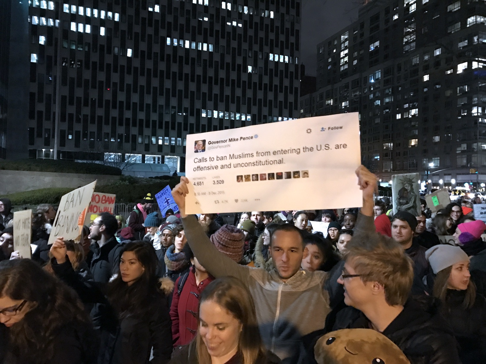
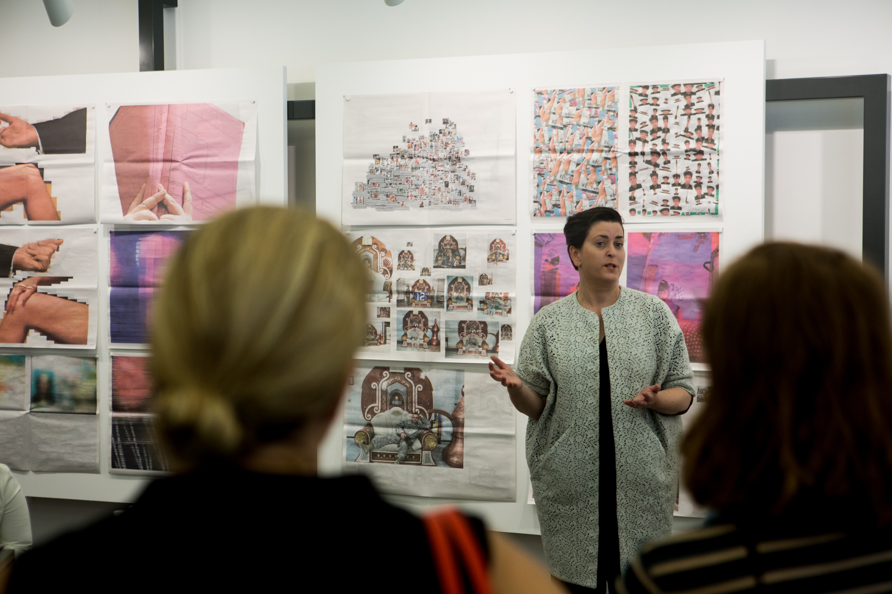
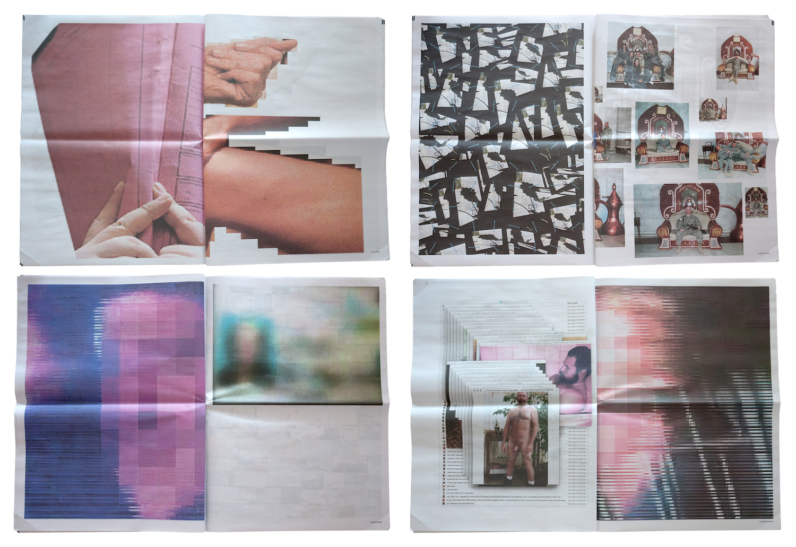
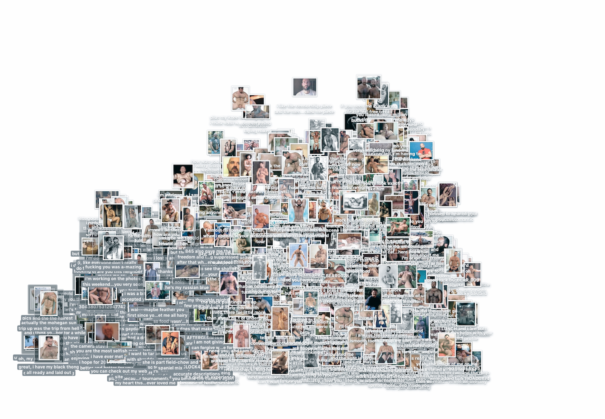

soulellis.com / writing / aug2017
Urgent Archives
Paul Soulellis
August 2017

“Urgent Archives” published in Public, Private, Secret: On Photography and the Configuration of Self, edited by Charlotte Cotton, co-published by Aperture and ICP, 2018.
Also appears in Library of the Printed Web: Collected Works, 2013–2017, published by Paul Soulellis.
How do we choose what to preserve? Any text, image, threaded conversation, or tweet may be considered a valuable artifact in today’s post-truth condition. While the pressure to save and accumulate is immense, so is our need to curate and amplify particular messages. After the most recent U.S. presidential election, I saw people printing tweets and carrying them high above their heads at protests. Bernie Sanders brought a large, printed tweet to the Senate floor during one debate on healthcare. This act of drawing from digital archives and displaying printed material publicly serves as a material reminder, or proof: at this particular moment, something was said. As each utterance is broadcast, indexed, and archived into our hyperreal state, printing still seems to be one way to control—or at least resist—the narrative.

February 1, 2017 (NYC)
Printing has always been political. The act of transferring material to paper carries with it a charge, a potential transfer of state—from private to public, from speech to text, from one copy to many. These affordances of the printed page come very close to the definition of publishing itself. Contained within “making public” are paper’s properties of exposing, giving visibility, circulating, and saving. Printing digital material is especially fraught with this charge, because embedded within it is a particular instinct to pause and preserve what might otherwise be lost—to downshift from fast to slow, to resist the speed and ephemerality of digital flow.
This call to examine digital archives has always been at the heart of the Library of the Printed Web. When I founded the project in 2013, it was to collect artists’ books and zines around a very simple idea: network culture articulated as printed artifact. My interest was centered around artists asking questions about speed and materiality in this context, as well as themes such as authorship, aura, and accessibility.
I would identify that period, roughly from 2008 to 2015, as post-iPhone and pre-Trump. It was the time when the network began to get personal, to build our trust, to travel with us, to reveal itself in more surprising places. It was the time of the new aesthetic, a term coined by artist James Bridle around 2012, referring to “a way of seeing that seemed to reveal a blurring between ‘the real’ and ‘the digital,’ the physical and the virtual, the human and the machine.” It was also the beginning of total network saturation, as artists and designers learned to construct identity, negotiate presence, and present work in truly networked space.
We began to carry the browser around with us all day, and to sleep beside it at night. What did it now mean to see it on paper? How did screen-based work change when printed in this uncanny way? And what opportunities did web-to-print afford for distribution, platforms, and audience? For a while, it seemed crucial that we acknowledge spaces like the Instagram account and the reddit thread and text messaging as legitimate venues for writing, publishing, and artistic practice. The hierarchy between web page and printed page had become less fixed, and Printed Web was a fitting venue to perform and celebrate this slippery condition.

Printed Web #4 (2016), lobby installation at International Center of Photography, June 2016 (curator Charlotte Cotton pictured)
ICP’s Public, Private, Secret exhibition opened to the public on the same day as the Brexit vote was cast, and one month before Trump was officially nominated as the Republican candidate for the U.S. presidency. Installed in the museum’s new lobby on the Bowery that evening were all of the newsprint pages of Printed Web #4, co-published with the International Center of Photography Museum. Looking back now, it’s impossible not to see this installation—and perhaps the entire Public, Private, Secret exhibition—within a larger context of socio-political angst and turmoil. I curated the work in Printed Web #4 around the exhibition’s theme, so this sixty-four-page tabloid-size publication now seems like a particularly good lens for viewing artists who worked with issues of identity, privacy, and digital archives at the very moment when #fakenews first appeared.

Printed Web #4 (2016), Paul Soulellis (ed.); New York: Library of the Printed Web and International Center of Photography, 40 pages, print-on-demand, endless edition.
Many of the artists in the issue suggested that the current state of the image was precarious and anxious. They did this through the use of found material and an acute interrogation of the digital archive: Angela Genusa’s “Throne” (2016) presents hundreds of JPG snapshots of U.S. military personnel posing on Saddam Hussein’s throne. The images are part of a larger digital archive assembled by the artist from various online locations. Wolfgang Plöger’s “Accused” (2016) consists of four tightly cropped, silhouetted images. Each depicts a person accused of criminal activity, photographed in public while hiding their face behind paper. Eva and Franco Mattes’ “The Others” (2011) features fifty-one images from a collection of ten thousand photographs taken from random personal computers; the original authors and subjects remain unacknowledged, and most likely, unaware. Elisabeth Tonnard’s “Geldermalsen riots” work (2016) consists of two zoomed-in images, each of a person who rioted at a proposed refugee center in the Netherlands. The blurred photographs, taken from surveillance footage, were originally published by the local authorities to force the rioters to publicly identify themselves. Christopher Clary’s centerfold project, “sorry to dump on you like this.zip” (2016) shows an arrangement of found images of men taken from gay porn sites. The work is part of the artist’s ongoing effort to disperse a large collection of online porn that he accumulated over many years.
